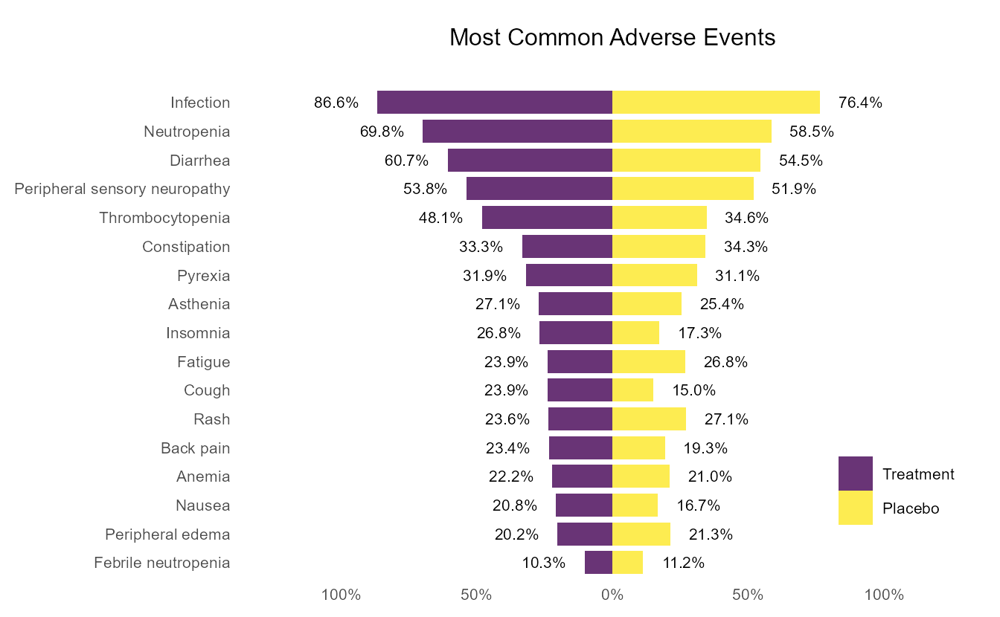

library(tidyverse)8 金字塔图：让不良事件组间对比一目了然！
在分析治疗组与对照组的药物不良事件（AE）发生率时，表格是最常见的呈现方式。然而，表格的局限性也显而易见，面对密密麻麻的数字，我们很难直观地比较两组之间AE发生率的差异。
金字塔图则提供了一种解决方案，将治疗组和对照组的AE 发生率对称展示，高低对比一目了然。
8.1 关于金字塔图
金字塔图最早应用于人口统计学，用于展示一个国家或地区人口的年龄结构与性别分布1。用于AE发生率的可视化时，纵轴（Y轴）代表不良事件类别（如乏力、恶心、贫血等），按照发生率由高到低排序；横轴（X轴）以中轴为界，一侧为治疗组，另一侧为对照组，条形分别向两侧延伸，其长度对应各组AE的发生率。金字塔图可以完整地呈现不良事件谱。
8.2 为什么使用ggplot2绘制金字塔图？
R中有专门绘制金字塔图的包，能够快速出图，但灵活性有限，难以对图形细节进行精细调整。由于金字塔图本质上是条形图的一种变形，因此可以借助 ggplot2中的函数geom_bar()与geom_text()，同时对数据结构进行适当的调整，即可绘制出既美观又灵活可调的金字塔图。
8.3 金字塔图实例
在本例中我们将用到tidyverse包。“具体来说，tidyverse是一组R包（ggplot2就在其中），它们共享一种高层设计哲学和底层语法与数据结构，使得学习其中一包有助于轻松掌握下一包。tidyverse 涵盖了每个数据科学项目的核心重复任务：数据导入、数据整理、数据操作、可视化以及编程。”2总之，使用tidyverse可以让数据整理和ggplot2绘图变得更容易。
加载必要的包。
本文用到的模拟数据如Table 8.1所示。第一列 “AE” 为不良事件类别。n_trt 和 n_pbo 分别为治疗组、对照组发生该 AE 的患者数，pct_trt 和 pct_pbo 为对应的百分比；n_pct_trt 和 n_pct_pbo 则是患者数与百分比的组合，如 “304 (86.6)”。
| AE | n_pct_trt | n_pct_pbo | n_trt | n_pbo | pct_trt | pct_pbo |
|---|---|---|---|---|---|---|
| Infection | 304 (86.6) | 265 (76.4) | 304 | 265 | 86.6 | 76.4 |
| Neutropenia | 245 (69.8) | 203 (58.5) | 245 | 203 | 69.8 | 58.5 |
| Diarrhea | 213 (60.7) | 189 (54.5) | 213 | 189 | 60.7 | 54.5 |
| Peripheral sensory neuropathy | 189 (53.8) | 180 (51.9) | 189 | 180 | 53.8 | 51.9 |
| Thrombocytopenia | 169 (48.1) | 120 (34.6) | 169 | 120 | 48.1 | 34.6 |
| Constipation | 117 (33.3) | 119 (34.3) | 117 | 119 | 33.3 | 34.3 |
| Pyrexia | 112 (31.9) | 108 (31.1) | 112 | 108 | 31.9 | 31.1 |
| Asthenia | 95 (27.1) | 88 (25.4) | 95 | 88 | 27.1 | 25.4 |
| Insomnia | 94 (26.8) | 60 (17.3) | 94 | 60 | 26.8 | 17.3 |
| Cough | 84 (23.9) | 52 (15.0) | 84 | 52 | 23.9 | 15.0 |
接下来需要将原始数据进行变换处理，以满足绘制金字塔图的要求。基本思路是把其中一组数据的百分比和标签位置取负，这样绘图时这组数据就会落在X轴左侧。
pyramid <- df |>
arrange(pct_trt) |>
select(c(AE, pct_trt, pct_pbo)) |>
pivot_longer(
cols = c(pct_trt, pct_pbo),
names_to = "group",
values_to = "percentage"
) |>
mutate(label_position = percentage + 15) |>
mutate(
percentage = if_else(group == "pct_trt", -percentage, percentage),
label_position = if_else(group == "pct_trt", -label_position, label_position),
group = factor(
group,
levels = c("pct_trt", "pct_pbo"),
labels = c("Treatment", "Placebo")
)
)经过以上变换，我们就得到了可用于绘制金字塔图的数据，如Table 8.2所示。
| AE | group | percentage | label_position |
|---|---|---|---|
| Febrile neutropenia | Treatment | -10.3 | -25.3 |
| Febrile neutropenia | Placebo | 11.2 | 26.2 |
| Peripheral edema | Treatment | -20.2 | -35.2 |
| Peripheral edema | Placebo | 21.3 | 36.3 |
| Nausea | Treatment | -20.8 | -35.8 |
| Nausea | Placebo | 16.7 | 31.7 |
| Anemia | Treatment | -22.2 | -37.2 |
| Anemia | Placebo | 21.0 | 36.0 |
| Back pain | Treatment | -23.4 | -38.4 |
| Back pain | Placebo | 19.3 | 34.3 |
接下来就可以正式绘图啦，执行以下代码生成最终的金字塔图，如Figure 8.1所示。
p <- pyramid |>
ggplot(aes(x = fct_inorder(AE), y = percentage, fill = group)) +
geom_bar(
stat = "identity",
position = "identity",
linewidth = 0,
width = 0.8
) +
geom_text(
aes(y = label_position, label = scales::label_percent(scale = 1)(abs(percentage))),
size = 8 * 0.35
) +
scale_y_continuous(limits = c(-125, 125), labels = \(x) scales::label_percent(scale = 1)(abs(x))) +
scale_fill_viridis_d(name = NULL, alpha = 0.8, option = "viridis") +
coord_flip() +
labs(title = "Most Common Adverse Events\n") +
theme_minimal(base_size = 10) +
theme(
legend.position = c(0.88, 0.18),
axis.title = element_blank(),
plot.margin = margin(t = 0.5, r = 0.25, b = 0.25, l = 0.25, unit = "cm"),
panel.grid = element_blank(),
plot.title = element_text(hjust = .5)
)
print(p)
参考文献
1.
Population pyramid. in Encyclopedia of epidemiology (SAGE Publications, Inc., 2455 Teller Road, Thousand Oaks California 91320 United States, 2008). doi:10.4135/9781412953948.n358.
2.
Wickham, H. et al. Welcome to the tidyverse. JOSS 4, 1686 (2019).